Mù Cang Chải nằm cách thành phố Yên Bái 180km và thủ đô Hà Nội 300km về phía Tây Bắc, là một huyện nổi tiếng với những thửa ruộng bậc thang đẹp ngút ngàn. Đến mùa lúa chín nơi đây trở thành điểm thăm quan lý tưởng không thể bỏ qua trong hành trình du lịch Yên Bái của nhiều du khách.
I. Giới Thiệu Về Mù Cang Chải.
Là một huyện miền núi cách trung tâm tp Yên Bái 180km, có địa hình đặc biệt, huyện xa nhất và hiểm yếu, kỳ bí nhất. Con đường từ Mường Lò tới huyện “Mù” này rất gian nan hiểm trở. Còn nhiều đoạn phải vượt suối băng rừng vất vả.
Ở độ cao trung bình 2000m so với mực nước biển, đỉnh cao nhất là 2.400m, huyện có dân số với 95% người dân tộc Mông, thường gọi là người Mèo đen, vốn là một dân tộc thường thích chọn nơi ở thật cao của các địa phương để cư trú. Họ leo trèo rất giỏi nên thích nghi sống được ở những vùng thật cao và có địa hình hiểm trở.
Chỉ với khoảnh đất tầm 2m2, họ cũng có thể be bờ trồng lúa. Càng đáng ngạc nhiên hơn, với độ cao 2000m họ cũng có thể trồng được lúa nước. Trồng lúa nước có nghĩa là được nền văn minh khởi phát cách nay khoảng 2000 năm.
II. Thời Điểm Du Lịch Mù Cang Chải Lý Tưởng.
Du khách du lịch Yên Bái thông thường đến Mù Cang Chải vào 2 mùa để thăm quan là mùa lúa chín và mùa nước đổ.
– Tháng 5 – 6: mùa nước đổ
Những cơn mưa mùa hè trút nước xuống ngọn núi, sau đó nước trên núi sẽ dẫn nước vào ruộng bậc thang. Tràn vào thửa ruộng làm đất khô cằn trở nên mềm hơn và nở ra, nhờ vậy mà bà con dân tộc có thể dể dàng cấy lúa.
Thời điểm này bà con là lúc bà con chuẩn bị vụ mùa mới, vì thế ruộng bậc thang miền núi phía Bắc chỉ có thể trồng được một vụ.
Khi thăm quan ruộng bậc thang lúc này hiện lên một vẻ đẹp khiến cho du khách không khỏi ngỡ ngàng.
– Tháng 9 – 10: mùa lúa chín.
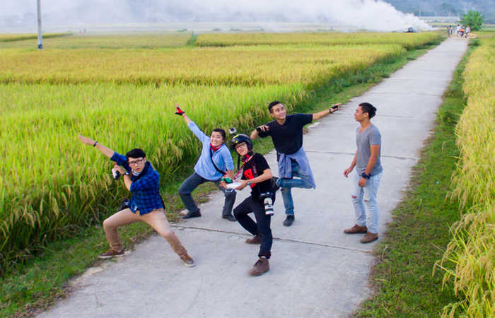
Tháng 9 – 10, lúa chín vàng trải dài khắp đồi núi, tại các thung lũng, đậm chất thu sang. Lúc này Mù Cang Chải khoát một bộ quần áo màu ràng rực rỡ của đồng lúa. Đây là thời điểm nhiều đoàn du khách kéo đến chụp hình, quay video ghi lại những khoảnh khắc đẹp đẽ nhất của mình bên những người thân yêu.
III. Hướng Dẫn Đi Đến Mù Cang Chải.
Hiện Mù Cang Chải là địa danh du lịch được nhiều người tìm kiếm nhất. Hạ tầng nơi đây đang phát triển hơn trước, du khách tại thủ đô có thể đi ô tô đến Mùa Cang Chải theo tuyến đường sau:
– Hướng 1: qua Sơn Tây, cầu Trung Hà, Tam Nông cứ dọc bờ sông Hồng mà ngược tới cầu Văn phú đến Yên Bái.
– Hướng 2: Cầu Thăng Long, QL 2, Phúc Yên, Việt Trì, Đoan Hùng, QL 70 đến Yên Bái (đây là tuyến đường được nhiều người lựa chọn vì gần và dễ đi lại nhất).
– Hướng 3: Cầu Thăng Long – Phúc Yên – Vĩnh Yên – Lập Thạch – Sơn Dương – QL 37 – Tuyên Quang – Yên Bái.
Nếu bạn muốn đi bằng xe khách thì mỗi ngày đều có xe đi từ bến xe Mỹ Đình, Giáp Bát đến Mù Cang Chải.
IV. Đi Lại Tại Mù Cang Chải.
Nếu bạn đi bằng xe khách đến Yên Bái, khi ở trọ tại khách sạn, nhà nghỉ, bạn có thể liên hệ với lễ tân khách sạn nơi cư trú thuê xe máy với giá từ 100k – 200k đồng/ngày tuỳ thời điểm. Nếu mùa lễ hội hay mùa lúa chín sẽ có giá cao hơn.
Hoặc bạn có thể gọi xe taxi đang hoạt động tại Yên Bái để đi thăm quan.
+ Taxi Yên Sơn: 0216.3.855.855 – 0216.3.854.854
+ Taxi Yên Bái: 0216.3.86.86.86
+ Taxi Sơn Hà: 0216.3.210.292
+ Taxi Mai Linh: 0216.3.836.836
V. Sự Độc Đáo Của Mù Cang Chải.
Câu hói của dân gian xưa nay “Tất đất tấc vàng” thật vô cùng ý nghĩa, nhưng ý nghĩa sáng giá, thấm thía nhất là ở… Mù Cang Chải. tại đó, không biết đã từ bao đời và qua bao thế hệ, người dân tộc Mông đã thực hiện được ý tưởng sâu sắc này bằng sự cần cù, kiên nhẫn trong lao động sản xuất, tự lực biến vùng đất đồi dốc đứng heo hút thành vùng ruộng lúa bậc thang san sát nhau. Mỗi tấc đất đều cho vô số hạt thóc, gạo nuôi sống con người, kiên cường trước mọi thử thách của đât trời, thời tiết khắc nghiệt.
Thị trấn huyện nằm bên một dòng suối lớn, có nhiều cầu tre lắt lẻo bắc ngang. Xem ra những kỳ thú lắm. Một bên là rừng thông, còn một bên là vách núi đứng dựng. Đường đi lại tại Mù Cang Chải còn nhiều khó khăn nhưng với vẻ đẹp của tự nhiên luôn thu hút nhiều nhiều du khách thăm quan. Xứ “Mù” vẫn còn nhiều điều kỳ bí, không mấy ai được nhìn thấy “thiên đường núi rừng” này vẫn là vùng đất ước mơ của nhiều nhiếp ảnh gia.
VI. Địa Điểm Nghỉ Ngơi Qua Đêm Tại Mù Cang Chải.
Khi đến Mù Cang Chải, việc đầu tiên của du khách là tìm về khách sạn, nhà nghỉ để nghỉ ngơi, ăn uống và chuẩn bị cho hành trình khám phá. Dưới đây là một số nhà nghỉ chất lượng nơi vùng núi này.
– Nhà Nghỉ Moon, toạ lạc tại tổ 5 thị trấn Mù Cang Chải: số điện thoại: 0293.878.929 – 0912.05.8899, là nhà nghỉ tiện nghi, có mạng internet, phục vụ ăn sáng và cho thuê xe máy đi lại.
– Nhà nghỉ Suối Mơ: số điện thoại: 029.3878.643 – 0915.842.789
– Nhà Nghỉ Sơn Ca, số điện thoại: 0293.878.185 – 0988.981.675
– Nhà Khách Bưu Điện: số điện thoại 0975.644.965
– Nhà Nghỉ Xóm Vắng, số điện thoại: 029.389.7205 – 0918.177.325 – 0982.385.440
– Nếu bạn muốn những khách sạn sang trọng hơn bạn có thể thuê tại thị xã Nghĩa Lộ cách Mù Cang tầm 100km giá thuê dao động 250k – 400k/phòng/ngày.
Với những du khách muốn sống gần gũi với thiên nhiên có thể thuê nhà nghỉ Tú Lệ. Phòng thiết kế theo kiểu homestay hoặc phượt thủ có thể lựa chọn hình thức cắm trại nghỉ đêm tại một số vùng đồi Mù Cang Chải cũng là một giải pháp qua đêm thú vị đấy.
VII. Địa Điểm Du Lịch Mù Cang Chải Không Thể Bỏ Qua.
Một khi đến với xứ “Mù” bạn sẽ được thưởng ngoạn cảnh đẹp những màu vàng ươm của lúa chín, ruộng bậc thang lượn vòng, đẹp mộng mị, lãng mạn và thanh thoát… Dưới đây là những địa điểm bạn không nên bỏ qua.
1. Thị Trấn Tú Lệ:
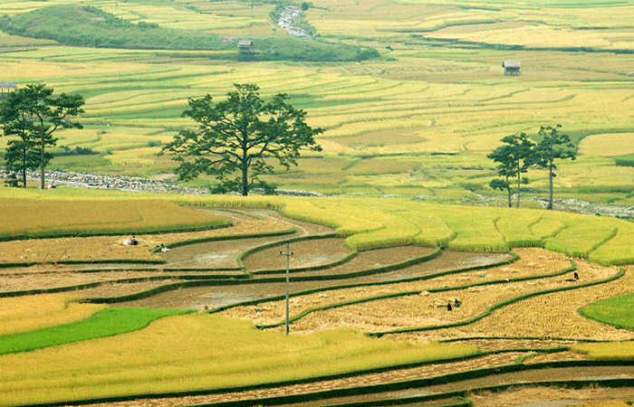
Đây là điểm thăm quan được nhiều du khách nghĩ đến đầu tiên, đến đây bạn sẽ được chiêm ngưỡng cánh đồng bậc thang trải dài với màu vàng và màu xanh đan xen tuyệt đẹp. Gần đó là bản Lìm Thái, Lìm Mông cách đó tầm 3km, bạn sẽ được ngắm những ngôi nhà sàn hai bên đường được xây dựng một cách đơn sơ trong một không gian tĩnh lặng.
2. Đèo Khau Phạ:
Nằm trong danh sách 4 ngọn đèo dài nhất miền Bắc với chiều dài 40km. Trong hành trình chinh phục đỉnh đèo, lên đến nơi bạn sẽ thấy mây mù che phủ. Đèo uốn lượn quanh co trùng điệp, giữa rừng núi đại ngàn. Đứng trên đỉnh đèo Khau Phạ, phóng tầm nhìn ra xa, thu vào tầm mắt khung cảnh thiên nhiên tươi đẹp, khiến cho du khách có cảm giác lòng nhẹ nhõm.
3. Ruộng Bậc Thang La Pán Tẩn:
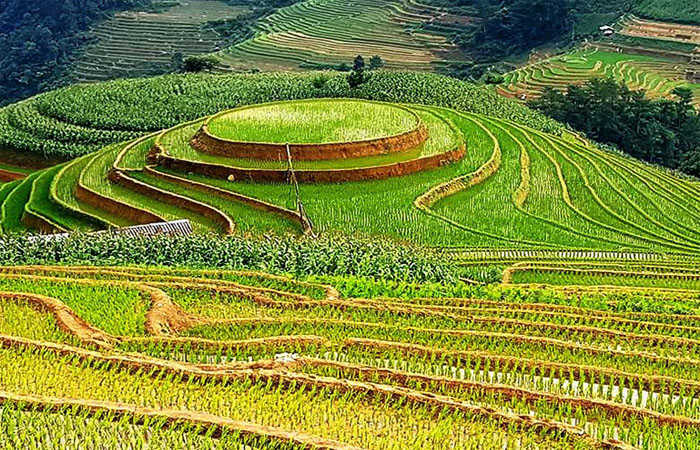
Là địa danh thăm quan thu hút du khách nhất tại Mù Cang Chải có hơn 700ha ruộng bậc thang, xếp tầng tầng, lớp lớp khắp triền đồi, nhiều du khách đến với ruộng mâm xôi vàng để chụp hình chia sẻ với bạn bè trên mạng xã hội facebook.
4. Bản Lìm Mông:
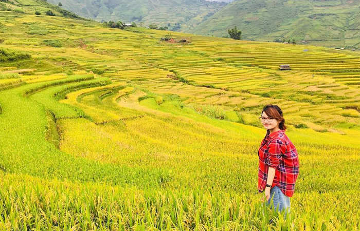
Là một bản làng tuyệt đẹp nằm ẩn mình trong mây. Nhiều giới phượt thủ vẫn hay chia sẻ cho nhau về tứ đại hiểm địa Tây Bắc bởi sự hiểm trở khó đi và phong cảnh đẹp ngút ngàn. Lìm Mông đầy ắp những thách thức thu hút du khách.
5. Xã Chế Cu Nha:
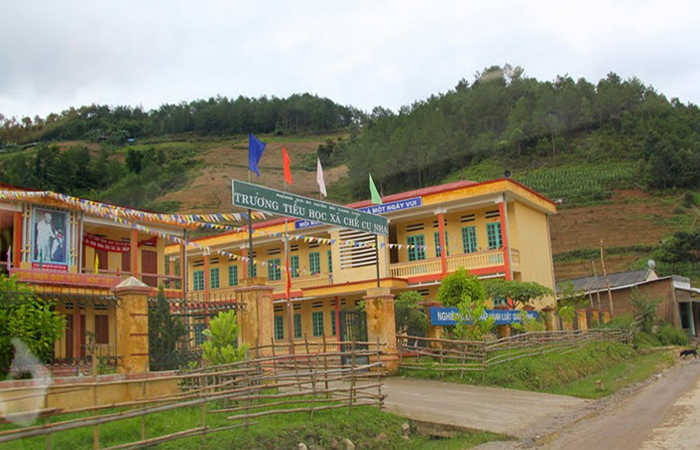
Nằm cách trung tâm Mù Cang tầm 7km về hướng thủ đô, đường vào xã này khá dốc và đi lại khó khăn, nhưng vẫn là mục tiêu chinh phục cuốn hút nhiều phượt thủ đến từ thủ đô.
6. Thác Pú Nhu.
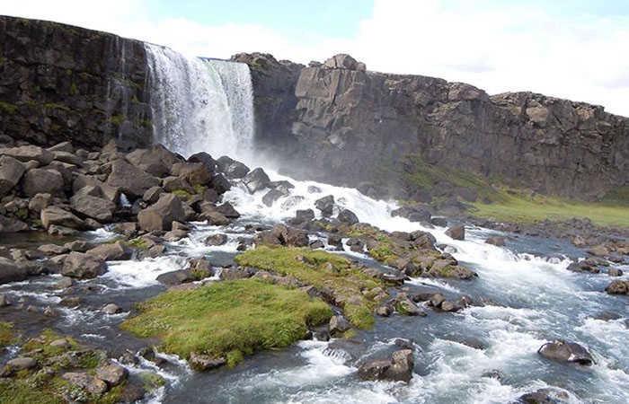
Là một thắng cảnh đẹp thuộc bản Pú Nhu, xã La Pán Tẩn, cách trung tâm xứ Mù tầm 10km về hướng Tây. Thác Pú Nhu là tậpn hợp của nhiều con suối trên các cánh rừng đầu nguồn từ Than Uyên tỉnh Lào Cai tụ họp, thác có độ cao tầm 20m chia thành nhiều tầng.
7. Thác Mơ.
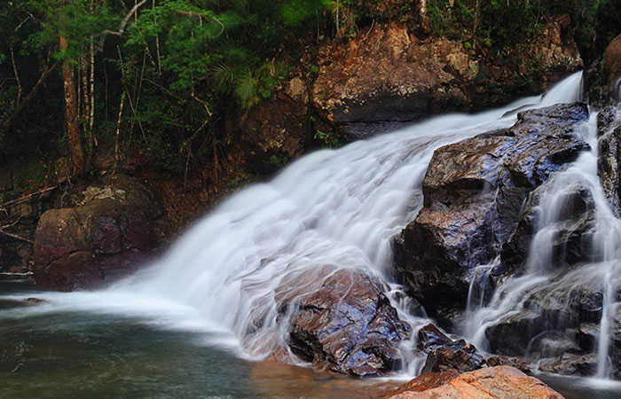
Là ngọn thác đẹp nằm giữa 2 ngọn đồi Nả Háng A và Nả Háng B, xã Mồ Dề. Thác Mơ là một trong mục tiêu chinh phục thu hút phượt thủ.
Để đến đây từ QL 32, đi tiếp 30 phút đến hân thác, tiếp tục bạn tới điểm thác một tầng nơi dòng thác chảy theo hình xoắn ốc. Bạn sẽ đến điểm thác 4 tầng, rồi đi bộ ngược lên dòng thác. Tại đây bạn có thể chụp hình và để lưu lại những khoảng khắc đẹp nhất tại Thác Mơ.
8. Bản Thái.
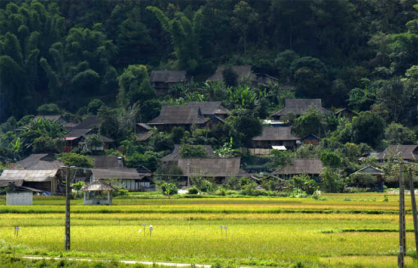
khi du lịch Mù Cang Chải, qua chiếc cầu trung tâm huyện rẽ trái tầm1km tới bản Thái. Đây là một bản làng nhỏ yên bình giữa thung lũng, tựa lưng vào sườn núi.
Bản Thái luôn thu hút nhiều du khách thăm quan bởi cảnh đẹp hoang sơ và người dân tộc mến khách sẵn sàn chia sẻ cho du khách những món ăn đặc sản hấp dẫn, bạn có thể hoà mình vào các lễ hội và nghỉ ngơi tại nhà sàn, giao lưu, đốt lửa trại…
9. Đèo Lũng Lô.

Là một ngọn đẹp đẹp có chiều dài 15km, trên quốc lộ 37, ranh giới với tỉnh Sơn La. Trong thời kỳ chiến tranh, con đường đèo này rất quan trọng trong công cuộc vận chuyển lương thực tiếp tế cho chiến trường Điện Biên. Sau đó con đường dần vào quên lãng, đến khi đèo Khế nối với Yên bái và Sơn La được hoàn thành.
Tại đèo Lũng Lô du khách có thể thăm quan các bản làng dân tộc, khám phá những phong tục tập quán đặc sắc của bản làng vùng cao Tây Bắc và tham gia những lễ hội ngày mùa nơi đây.
VIII. Du Lịch Mù Cang Chải Ăn Gì ?
Ngoài thưởng ngoạn cảnh đẹp say đắm lòng người thì thưởng thức những món ăn ngon, đặc sản địa phương là một trong những yếu tố níu giữ chân du khách. Sau đây là những món ăn đặc sản bạn nên thưởng thức.
1. Thịt Lợn Bản.
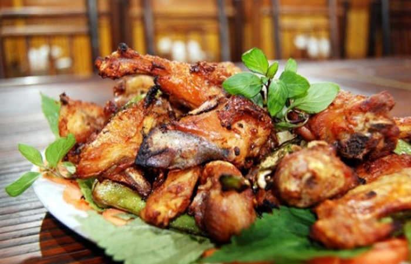
Còn được gọi là thịt lợn đen hay lợn cắp nách, do người dân tộc Mông nuôi dưỡng theo phương pháp thô sơ, hoang dã, để lợn chạy rông, tự tìm thức ăn trên những đồi núi, trong rừng, chúng thường xuyên vận động nên thịt săn chắc, ít mỡ khi nướng lên thơm ngon.
Vì được nuôi dưỡng tự nhiên nên trọng lượng mỗi chú lợn chỉ tầm 10 – 15kg. Mỗi con có thể chế biến thành một mâm cỗ với nhiều món hấp dẫn như nướng, hấp, luộc,… ăn kèm với rau rừng,… chấm mắc kén khiến món ăn trở nên hấp dẫn bội phần.
2. Gà Đồi.
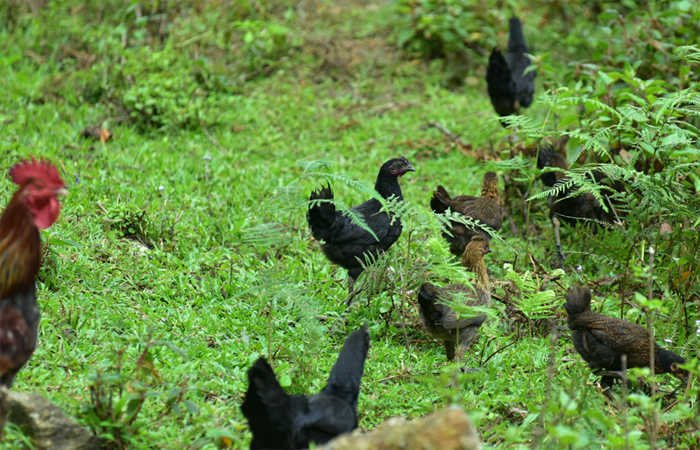
Là món ăn hoang dã ngon không kém thịt lợn bản. Những con gà được nuôi thả tự nhiên trên các sườn đồi, thịt chắc, thơm ngon, mỗi con có trọng lượng 1kg, nếu muốn thưởng thức bạn nên báo trước chủ nhà để chuẩn bị, vì muốn bắt gà thì phải đến tối mới được.
3. Xôi Nếp Tú lệ.
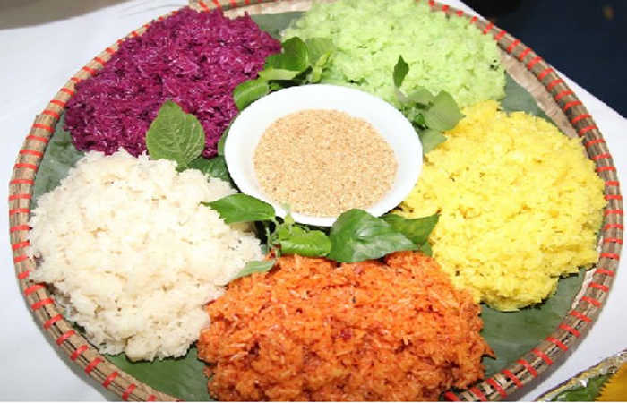
Khi đến với vùng núi Mù Cang Chải vào mùa lúa chín, du khách không nên bỏ qua món xôi trứ danh này. Bà con dân tộc Mông lấy gạo nếp được trồng trên thửa ruộng bậc thang nấu xôi.
Du khách nên báo chủ nhà nấu món xôi nếp lúa mới như vậy mới bảo đảm chất lượng hấp dẫn (nếu xôi hơi cứng thì là gạo thu hoạch từ năm ngoái).
4. Thịt Trâu Gác Bếp.
Là món ăn đặc trưng của vùng núi rừng Tây Bắc. Do người dân tộc Thái đen chế biến. Nguyên liệu là làm từ thịt bắp của những con trâu thả rông trên vùng núi, đồi. Bằng kỹ thuật cổ truyền, bà con róc từng miếng thịt trên con trâu rồi hun bằng khói của than củi đốt từ các loại cây mọc trên núi đá.
Thịt trâu gác bếp trở nên thơm ngon hấp dẫn dưới bàn tay của đầu bếp địa phương và đây là món được nhiều du khách chọn mua về làm quà cho người thân.
Ngoài ra Mù Cang Chải còn khá nhiều điều kỳ thú khác đang chờ quý khách đến khám phá!